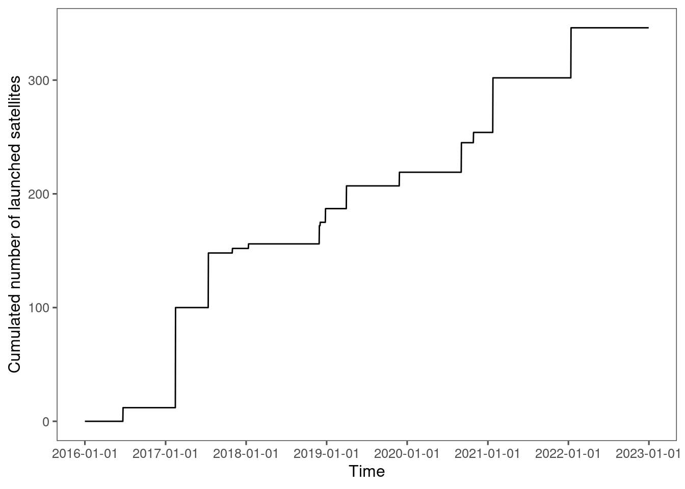

1 Preparation
## R version 4.4.3 (2025-02-28)
## Platform: x86_64-pc-linux-gnu
## Running under: Red Hat Enterprise Linux 8.10 (Ootpa)
##
## Matrix products: default
## BLAS: /sw/pkgs/arc/stacks/gcc/13.2.0/R/4.4.3/lib64/R/lib/libRblas.so
## LAPACK: /sw/pkgs/arc/stacks/gcc/13.2.0/R/4.4.3/lib64/R/lib/libRlapack.so; LAPACK version 3.12.0
##
## locale:
## [1] LC_CTYPE=en_US.UTF-8 LC_NUMERIC=C LC_TIME=en_US.UTF-8
## [4] LC_COLLATE=en_US.UTF-8 LC_MONETARY=en_US.UTF-8 LC_MESSAGES=en_US.UTF-8
## [7] LC_PAPER=en_US.UTF-8 LC_NAME=C LC_ADDRESS=C
## [10] LC_TELEPHONE=C LC_MEASUREMENT=en_US.UTF-8 LC_IDENTIFICATION=C
##
## time zone: America/Detroit
## tzcode source: system (glibc)
##
## attached base packages:
## [1] stats graphics grDevices utils datasets methods base
##
## other attached packages:
## [1] patchwork_1.2.0 sf_1.0-20 lubridate_1.9.4 forcats_1.0.0 stringr_1.5.1
## [6] dplyr_1.1.4 purrr_1.0.4 readr_2.1.5 tidyr_1.3.1 tibble_3.2.1
## [11] ggplot2_3.5.2 tidyverse_2.0.0
##
## loaded via a namespace (and not attached):
## [1] rstudioapi_0.17.1 jsonlite_2.0.0 magrittr_2.0.3 magick_2.8.4
## [5] farver_2.1.2 rmarkdown_2.29 fs_1.6.6 vctrs_0.6.5
## [9] memoise_2.0.1 terra_1.8-42 rstatix_0.7.2 htmltools_0.5.8.1
## [13] usethis_2.2.3 curl_6.2.2 broom_1.0.8 cellranger_1.1.0
## [17] TTR_0.24.4 sass_0.4.10 KernSmooth_2.23-26 bslib_0.9.0
## [21] htmlwidgets_1.6.4 zoo_1.8-12 cachem_1.1.0 mime_0.13
## [25] lifecycle_1.0.4 pkgconfig_2.0.3 Matrix_1.7-2 R6_2.6.1
## [29] fastmap_1.2.0 shiny_1.8.1.1 digest_0.6.37 colorspace_2.1-1
## [33] pkgload_1.4.0 ggpubr_0.6.0 labeling_0.4.3 imputeTS_3.3
## [37] timechange_0.3.0 abind_1.4-5 mgcv_1.9-1 compiler_4.4.3
## [41] proxy_0.4-27 remotes_2.5.0 bit64_4.6.0-1 withr_3.0.2
## [45] backports_1.5.0 tseries_0.10-56 carData_3.0-5 DBI_1.2.3
## [49] hexbin_1.28.3 pkgbuild_1.4.4 maps_3.4.3 ggsignif_0.6.4
## [53] stinepack_1.5 sessioninfo_1.2.2 classInt_0.4-10 gtools_3.9.5
## [57] tools_4.4.3 units_0.8-5 RcppDE_0.1.7 lmtest_0.9-40
## [61] quantmod_0.4.26 httpuv_1.6.15 nnet_7.3-20 glue_1.8.0
## [65] quadprog_1.5-8 nlme_3.1-167 promises_1.3.0 gridtext_0.1.5
## [69] grid_4.4.3 rsconnect_1.7.0 tidynab_0.1.0 generics_0.1.3
## [73] gtable_0.3.6 tzdb_0.5.0 class_7.3-23 hms_1.1.3
## [77] sp_2.1-4 xml2_1.3.8 car_3.1-2 ggrepel_0.9.6.9999
## [81] pillar_1.10.2 vroom_1.6.5 ggspatial_1.1.9 later_1.3.2
## [85] splines_4.4.3 ggtext_0.1.2 lattice_0.22-6 bit_4.6.0
## [89] tidyselect_1.2.1 miniUI_0.1.1.1 knitr_1.50 bookdown_0.46
## [93] urca_1.3-4 ptw_1.9-16 forecast_8.23.0 xfun_0.52
## [97] devtools_2.4.5 timeDate_4032.109 stringi_1.8.7 yaml_2.3.10
## [101] pacman_0.5.1 evaluate_1.0.4 codetools_0.2-20 archive_1.1.12
## [105] cli_3.6.4 xtable_1.8-4 munsell_0.5.1 jquerylib_0.1.4
## [109] Rcpp_1.0.14 readxl_1.4.5 mapproj_1.2.11 parallel_4.4.3
## [113] ellipsis_0.3.2 fracdiff_1.5-3 profvis_0.3.8 urlchecker_1.0.1
## [117] viridisLite_0.4.2 ggthemes_5.1.0 scales_1.3.0 xts_0.14.0
## [121] e1071_1.7-14 crayon_1.5.3 geosphere_1.5-20 rlang_1.1.6
## [125] cowplot_1.1.3if (!requireNamespace("pacman", quietly = TRUE)) install.packages("pacman")
if (!requireNamespace("devtools", quietly = TRUE)) install.packages("devtools")
# List of required packages
required_packages <- c("broom", "cowplot", "doSNOW", "dotenv", "foreach", "geosphere", "ggpubr", "ggrepel", "ggspatial", "ggthemes", "gtools", "imputeTS", "lubridate", "mclust", "parallel", "patchwork", "ptw", "rnpn", "rsconnect", "scales", "sf", "shiny", "taxize", "terra", "tidyverse")
# Identify missing packages
missing_packages <- setdiff(required_packages, rownames(installed.packages()))
# Install if there are missing packages
if (length(missing_packages) > 0) {
for (package in missing_packages) {
install.packages(package, repos = "https://cloud.r-project.org/")
}
} else {
message("All required packages are already installed. Skipping installation.")
}
# Check and install tidynab from GitHub
if (!requireNamespace("tidynab", quietly = TRUE)) {
devtools::install_github("zhulabgroup/tidynab")
}
pacman::p_load("tidyverse")
pacman::p_load("sf")
pacman::p_load("patchwork")
source("code/util_whit.R")
source("code/util_extend_ts.R").path <- list(
input = "alldata/input/",
intermediate = "alldata/intermediate/",
output = "alldata/output/"
)
.deploy_shiny <- F
.fig_save <- TTaxa of interest are based on 1) Lo et al.,2019 (Description and allergenic potential of 11 most important pollen taxa in the CUSSC region ranked by percent abundance relative to the sum of all pollen taxa over 31 NAB stations that meet inclusion criteria, 2003–2017) and 2) Crimmins et al., 2023. Spring- and fall-flowering elms are treated separately as suggested by Allison and Yingxiao.
v_taxa <- c("Acer", "Alnus", "Betula", "Carya", "Celtis", "Fraxinus", "Juglans", "Liquidambar", "Morus", "Platanus", "Populus", "Quercus", "Salix", "Ulmus early", "Ulmus late")
v_taxa_short <- str_split(v_taxa, pattern = " ", simplify = T)[, 1]Focus on the life cycles from 2018 to 2022, spanning 2017 and 2023. This is because of the availability of PlanetScope data.
